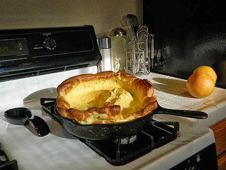

Tomato basil pasta
Origin:
Italian
Source:
Category:
Main Dish

Breif description
This recipe is a fantastic way to step up your pasta game without taking too much more of your time. It tastes way better than basic pasta with jarred sauce! I originally found this when my sister made it, and got the recipe off of Bon Appetit’s website. PS avoid using the shaker parmesan – I used that the first time I made this and it drew down the quality of the dish.
Recipe Ingredients:
- Pasta
- Tomatoes (any larger than cherry)
- Basil
- Red wine vinegar
- Extra virgin olive oil
- crushed red pepper
- finely grated block of parmesan
Recipe Steps
- 1.cut tomatoes along equator
- 2.squeeze juice and seeds out of tomatoes and discard
- 3.cut juiced tomatoes into small-ish pieces
- 4.smush down with large spoon to release some leftover juices
- 5.add in vinegar, olive oil, crushed red pepper and half of parmesan
- 6. let marinate for half an hour
- 7.add basil
- 8.cook pasta
- 9.toss marinade with cooked pasta and serve topped with remaining parmesan
- 10.Enjoy!!!
Photo Gallery


Pork and Peanut Dragon Noodles
Origin:
unknown
Source:
Category:
Main Dish, Comfort Food, Quick Meal

Breif description
This meal is a cheap and easy alternative to the classic cheap college meal: ramen noodles. It cooks up in about 10 minutes, and offers a ton of flavor and a more filling alternative to the typical packaged food. There is also plenty of room for culinary freedom and expression by adding extra sauces or spices, and substituting the pork for something like chicken for a healthier protein option.
Recipe Ingredients:
- 1/4 cup chili garlic sauce
- 1/4 cup soy sauce
- 1/4 cup brown sugar
- 1/2 lb. ground pork
- 2 3oz. packages ramen noodles (seasoning packets discarded)
- 3 green onions, sliced
- 1/4 cup unsalted peanuts, chopped
Recipe Steps
- 1.Combine the chili garlic sauce, soy sauce, and brown sugar in a bowl.
- 2.Add the ground pork to a skillet and cook over medium heat until it is fully browned. Once browned, add the prepared dragon sauce and chopped peanuts. Allow the pork and peanuts to simmer in the sauce for another 5 minutes, or until the sauce has reduced by half.
- 3.While the pork is browning, begin boiling water for your noodles. Once boiling, add your noodles and cook according to the package directions. Drain the noodles in a colander.
- 4.Once the sauce has reduced and the noodles have drained, add the noodles to the skillet and toss until everything is combined and coated in sauce. Top with sliced green onions and serve!
- 5.Enjoy!!!
Photo Gallery


Dutch baby pancake
Origin:
Washington
Source:
Daniel Morris
Category:
Main Dish
Breif description
An eggy sweet pancake. Tastes and smells like nutmeg and sugar. Rises with heat and falls elsewhere. Is essentially a giant crepe.
Recipe Ingredients:
- ½ cup flour
- ¼ cup sugar
- ⅛ teaspoon nutmeg
- 3 eggs
- ⅔ cup milk
- ¼ oil
Recipe Steps
- 1.preheat oven to 425 degrees
- 2.Put pan in oven with the oil
- 3.Mix dry ingredients.
- 4.Mix eggs and milk
- 5.Mix all together
- 6.Let it sit for ten minutes
- 7.Put in oven for 14 minutes
- 8.Enjoy!!!
Photo Gallery


Double Chocolate Cookies
Origin:
Michigan
Source:
Family Recipe
Category:
Dessert

Breif description
My daughter learned to make these cookies at a baking camp at Zingermanns and has tweaked the recipe to fit the taste buds of her siblings. They are extremely sugary so the salt helps to balance it. Note, these cookies are best eaten very quickly.
Recipe Ingredients:
- Unsalted butter
- Granulated Sugar
- Packed light or dark brown sugar
- Large egg
- Pure vanilla extract
- Semi-sweet chocolate chunks (melted)
- All-purpose flour
- Natural unsweetened cocoa powder
- Baking soda
- Salt
- Semi-sweet chocolate chunks
Recipe Steps
- 1.In a mixing bowl cream together the butter, granulated sugar, and brown sugar
- 2.Add the egg and vanilla extract and beat well
- 3.Add the melted chocolate
- 4.In a separate bowl combine the flour, baking soda, cocoa powder and salt
- 5.Combine the wet and dry ingredients
- 6.Add the unmelted chocolate chunks.
- 7.Form 15 cookies and place on a baking sheet.
- 8.Cooke for 12 to 13 minutes at 350 degrees.
- 9.Enjoy!!!
Photo Gallery


Peanut Butter and Jelly Sandwich
Origin:
American
Source:
Alex Likens
Category:
Main Dish

Breif description
This is a dish that is great at all times of year. Its mix of savory flavors with sweet jelly make sit a favorite dish for many people. This dish is great for any situation whether you are on the go, in a rush, or just looking for a tasty meal in your home.
Recipe Ingredients:
- Bread
- Peanut Butter
- Jelly
Recipe Steps
- 1.Take two piece of bread and place them on a plate
- 2.Put a thick layer of jelly on one piece of the bread
- 3.Put a thick layer of peanut butter on the other piece of the bread
- 4.Put the two pieces of bread together so they face each other
- 5.Enjoy!!!
Photo Gallery